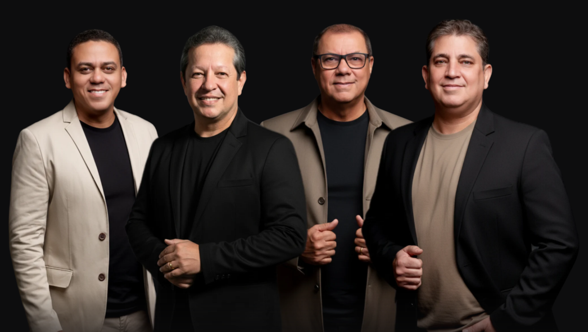
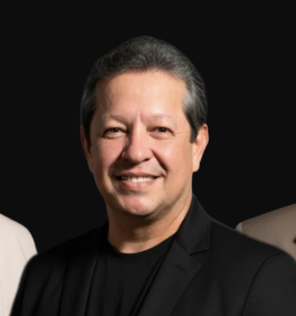

39 Anos de Louvor, Adoração e Propagação de Cristo!
Próximas Datas

Quer levar o Quarteto Gileade pra sua igreja ou evento?
Formação
1º Tenor
2º Tenor

Barítono
Baixo
Desde 1987
A história do Quarteto Gileade começa em 1987, na Igreja Assembleia de Deus, em Rio Verde–GO. Quatro jovens, envolvidos com a música e nascidos em lares cristãos, iniciaram sua trajetória inspirados por quartetos — especialmente os americanos da época. Incentivados pelo saudoso pastor Alvino Pereira Rocha, começaram cantando na igreja local e, posteriormente, expandiram seu ministério pelas congregações, cidades de Goiás e outros estados do Brasil. O nome "Gileade" foi escolhido por direção de Deus, pelo seu significado: unção, cura, saúde e vitória.
Ao longo da trajetória, o Quarteto Gileade recebeu reconhecimentos como título honoris causa pela Academia Brasileira de Letras, premiações de melhor quarteto do Brasil, moções e homenagens de prefeituras e câmaras municipais, reconhecimento da Frente Parlamentar Evangélica do Congresso Nacional, e honrarias nos Estados Unidos pelo trabalho musical evangelístico. Sediado em Rio Verde–GO, o grupo é filiado à CADESGO e à CGADB, e segue seu ministério louvando, adorando e propagando o evangelho de Jesus Cristo no Brasil e no exterior.
Assista
Clipes, gravações ao vivo e os últimos lançamentos do grupo, sempre no canal oficial.
Inscreva-se no CanalBastidores, agenda e novidades, acompanhe de perto.
Seguir no InstagramFale Conosco
O Quarteto Gileade apresenta quatro vozes em perfeita harmonia, interpretando músicas evangélicas que transmitem fé, paz, amor, salvação e alegria. Sua identidade é marcada pela excelência musical e pela fidelidade à mensagem do evangelho.